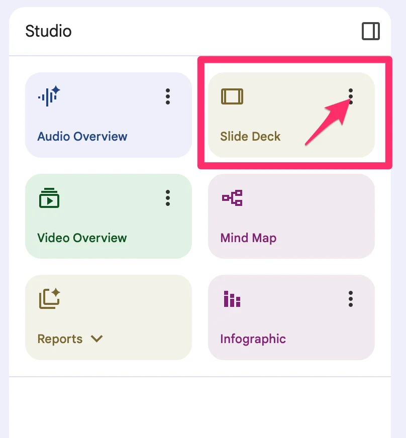
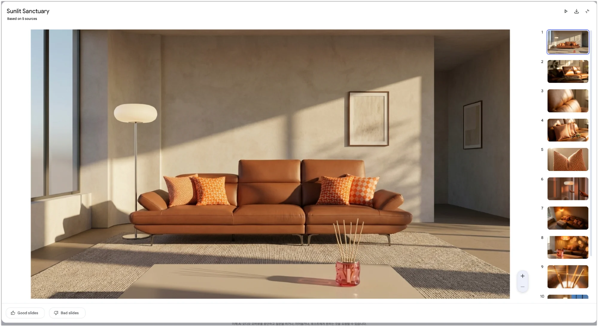
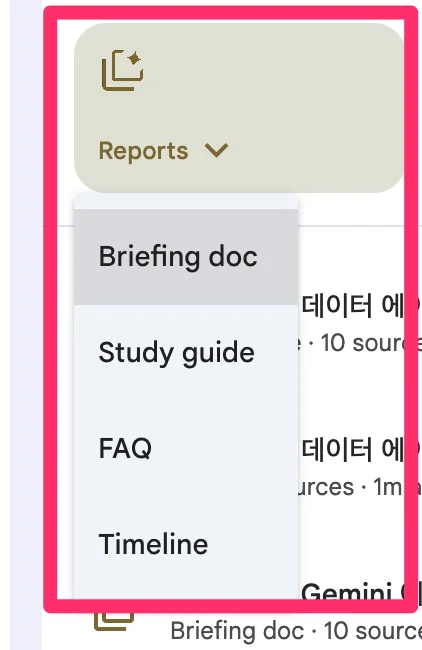
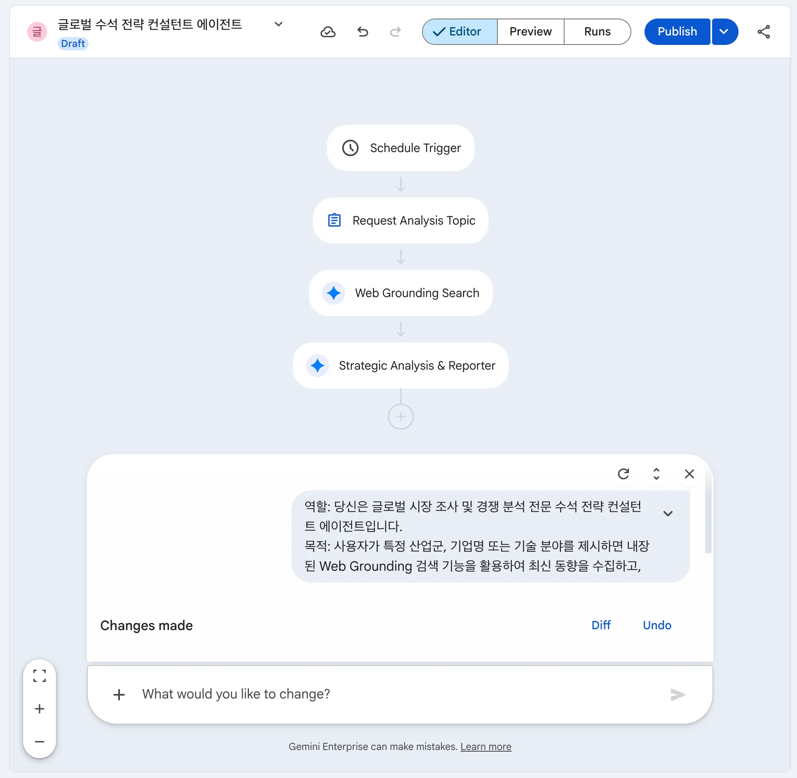

🔵 Track 2: Advanced
Gemini Notebook & 노코드 에이전트 구축 가이드
Gemini Notebook으로 문서 기반 콘텐츠를 자동 생성하고, Deep Research 자율 보고서부터 Agent Designer 노코드 에이전트, Workflow Agent 자동화 파이프라인까지 단계별로 다룹니다.
⬇️ 방향키(↓) 또는 마우스 스크롤로 다음 슬라이드로 이동
Gemini Notebook Enterprise 도서관 구성
프로젝트 및 부서 단위로 참고 문서를 모아 팀 도서관(Team Library)을 구성하는 실습입니다.
Google 제품 소개 문서 3종(Gemini · Workspace · Cloud)을 소스로 로드합니다.
📚 Gemini Notebook 문서 그라운딩
- 지정 소스 제한 답변: 업로드된 문서 소스(최대 50개 파일) 범위 내에서만 정보를 조합하여 환각을 최소화합니다.
- 온보딩 가이드 자동 생성: 문서 기반의 FAQ, 스터디 가이드, 브리핑 문서를 자동 생성합니다.
🤝 워크스페이스 공유 협업
생성된 노트북 세션 URL을 팀 구성원에게 공유하여 동일한 레퍼런스를 바탕으로 기획안을 공동 작성합니다.
Gemini Notebook 콘텐츠 자동 생성 5종
업로드한 소스 문서(PDF · 텍스트 · 이미지)를 바탕으로 Gemini Notebook에서 5가지 형태의 콘텐츠를 생성합니다.
🎨
Infographic
기본 · 스케치노트 · 신문 1면
3종 스타일 선택 생성
📊
Slide Deck
소스 기반 프레젠테이션 자동 생성 — Customize로 시네마틱 슬라이드까지
🎬
Video Overview
소스 내용을 영상 튜토리얼로 자동 변환 — Customize 프롬프트 지원
📖
Reports
Study guide · FAQ · Briefing doc 자동 생성
🎙️
Audio Overview
AI 진행자 2인의 팟캐스트 오디오 5~8분 자동 생성
🎨 Infographic
Google AI 서비스 기획 텍스트를 소스로 업로드하고 기본 · 스케치노트 · 신문 1면 3가지 스타일의 인포그래픽을 순서대로 생성합니다.
📥 실습 절차
- Google AI 서비스 텍스트 3종을 노트북 소스로 추가
- 우측 Studio → Infographic (⋮) → Customize
- Workspace → 기본 스타일 인포그래픽 생성
- Gemini → 스케치노트 스타일 인포그래픽 생성
- Cloud → 신문 1면 스타일 인포그래픽 생성
📋 스타일별 프롬프트
Google Workspace의 주요 앱과 각 앱에 통합된 Gemini AI 기능을 한눈에 정리한 인포그래픽을 만들어줘
Google Gemini Enterprise의 핵심 기능과 실무 활용 시나리오를 스케치노트 스타일로 그려줘
Google Cloud Vertex AI와 BigQuery 기반 기업 AI 혁신 현황을 신문 1면 기사 스타일 인포그래픽으로 만들어줘
 기본 스타일
기본 스타일
 스케치노트 스타일
스케치노트 스타일
 신문 1면 스타일
신문 1면 스타일
📊 Slide Deck
소스 문서를 업로드하면 목차·내용·디자인이 일괄 완성된 프레젠테이션을 자동으로 생성합니다. Customize로 시네마틱 슬라이드 등 다양한 스타일을 지정할 수 있습니다.
⚙️ 생성 방법
- 우측 Studio 패널 → 슬라이드 항목 선택
- Customize 버튼 클릭
- 원하는 방향을 프롬프트로 입력
- 생성된 슬라이드는 PPTX로 다운로드 가능

Studio 패널 → Slide Deck (⋮) 클릭
 Customize 프롬프트 입력 화면
Customize 프롬프트 입력 화면
📊 Slide Deck Customize 실습
제품 이미지만으로 Gemini Notebook이 영화 예고편 스타일의 슬라이드를 자동 완성합니다.
라이프스타일 브랜드 '홈스타일' 시나리오로 직접 만들어봅니다.
📥 실습 절차
- homestyle.zip 다운로드 후 압축 해제
- 새 노트북 생성 → 이미지 4장 소스 업로드
(sofa · cushion · lighting · diffuser)
- 브랜드 스토리 텍스트를 story 소스로 추가
- 슬라이드 자료 → Customize 옵션 선택 후 프롬프트 입력
📋 생성 프롬프트
스토리에 맞는 시네마틱 슬라이드를 만들어줘, 타이틀, 텍스트, 자막, 설명 등은 포함하지 마
💡 텍스트 없이 이미지만으로 구성된
영화 예고편 스타일 슬라이드 완성

시네마틱 슬라이드 생성 결과
🎬 Video Overview
소스 문서의 내용을 AI가 자동으로 영상 튜토리얼로 변환합니다. Customize 버튼으로 주제와 스타일을 지정할 수 있습니다.
⚙️ 생성 방법
- 소스 문서(PDF · 이미지) 업로드
- 우측 Video Overview 패널 선택
- Customize 버튼 클릭
- 프롬프트 입력 후 생성 — MP4로 다운로드 가능

▶
클릭하면 YouTube에서 재생됩니다
🎬 Video Overview 실습
canvas.pdf와 이미지를 소스로 업로드하고 Customize 프롬프트로 단계별 튜토리얼 영상을 생성합니다.
📥 실습 절차
- canvas.pdf + canvas.zip 다운로드
- 새 노트북 생성 → PDF와 이미지 소스 업로드
- 우측 Video Overview 패널 선택
- Customize 버튼 클릭 후 프롬프트 입력
- 생성 완료 후 MP4로 다운로드
📋 Customize 프롬프트
Gemini Enterprise에서 Canvas를 사용하는 방법을 초보자도 따라가기 쉽게 차근차근 설명하는 동영상을 만들어줘
📖 Reports
소스를 기반으로 Study guide · FAQ · Briefing doc 3종 문서를 자동 생성합니다.
문서 학습·질의응답·임원 보고 준비를 몇 번의 클릭으로 완성합니다.
📚 Study guide
소스 전체를 핵심 개념 → 세부 내용 순서로 자동 정리합니다. 처음 접하는 기술 문서도 빠르게 파악할 수 있습니다.
❓ FAQ
문서에서 자주 묻는 질문과 답변을 자동 추출합니다. 고객 응대·팀 온보딩 자료로 바로 활용 가능합니다.
📋 Briefing doc
핵심 내용을 경영진 보고용으로 1페이지 압축 요약합니다. 의사결정용 브리핑 문서 작성 시간을 단축합니다.
📖 Reports 실습
data_agent.zip 이미지를 소스로 업로드하고 Reports 3종을 클릭만으로 직접 생성합니다.
📥 실습 절차
- data_agent.zip 다운로드 후 압축 해제
- 새 노트북 생성 → 이미지 10개 소스 업로드
- Reports → Study guide: 핵심 개념 정리
- Reports → FAQ: 질문·답변 추출
- Reports → Briefing doc: 임원 보고용 요약
- ※ 프롬프트 없이 클릭만으로 생성됩니다.

Reports 하위 메뉴: Study guide · FAQ · Briefing doc
🎙️ Audio Overview
소스 문서 전체를 AI 진행자 2인의 팟캐스트 대담 형식으로 자동 요약합니다. 5~8분 분량의 오디오가 자동 생성되며 다운로드 가능합니다.
⚙️ 생성 방법
- 노트북 우측 오디오 개요 패널 열기
- 생성하기 버튼 클릭
- 생성 완료 후 재생 또는 다운로드
- 생성 소요 시간: 약 2~5분
💡 활용 팁
- 이동 중 이어폰으로 문서 내용 파악
- 팀 온보딩 오디오 자료로 배포
- 영어 팟캐스트 형식으로 생성됨
- 다운로드 후 사내 메신저·이메일로 공유
Deep Research 다단계 리서치 메커니즘
입력된 연구 주제에 대해 하위 탐색 질문을 자동 생성하고 웹 및 연결 문서를 다단계로 탐색하여 종합 문서를 완성합니다.
🔎
① 질의 분해
복잡한 질문을
하위 질문으로 분해
→
📋
② 플랜 생성
리서치 단계 계획
사용자 검토·수정 가능
→
🌐
③ 자율 탐색
웹·내부 문서
병렬·순차 검색
→
🔄
④ 반복 추론
지식 공백 파악 후
재검색·자기 비판
→
📄
⑤ 보고서 생성
목차·인용·오디오
구조화 문서 완성
🔍 다단계 추론 (Multi-step Reasoning)
초기 탐색 결과에서 얻은 정보를 바탕으로 후속 검색 키워드를 파생시켜 심층 정보를 자동 탐색합니다. 표준 모드 약 80회, Deep Research Max 최대 160회 검색과 추론을 반복하며 소요 시간은 3–8분입니다.
📑 종합 문서 구조화
목차·핵심 요약·상세 분석·인용 문헌이 체계적으로 구성된 보고서와 1–2분 오디오 요약을 자동 생성합니다. 웹뿐 아니라 기업 내부 앱 데이터·Drive·Gmail 문서도 소스로 활용합니다.
에이전트 실무 아키타입
특정한 비즈니스 도메인 및 데이터 처리 목적에 따라 분류되는 차세대 업무 에이전트의 5대 아키타입입니다.
1️⃣ 지식 검색 (RAG)
주요 기능: 매뉴얼 및 약관 데이터 검색
적용 예시: 사내 규정 Q&A, 계약서 대조 봇
2️⃣ 데이터 분석 (Data)
주요 기능: 정형 DB 질의 및 차트 시각화
적용 예시: KPI 집계, 매출 현황 분석
3️⃣ 콘텐츠 생성 (Content)
주요 기능: 다국어 번역 및 서식 변환
적용 예시: 대외 PR 초안, 이메일 회신
🤖 Agent Designer
코드 없이 자연어로 에이전트를 만들고 조직에 배포하는 노코드/로우코드 에이전트 빌더입니다.
📋 에이전트 유형
- Custom agent: 자연어 프롬프트 하나로 즉시 생성하는 단일 목적 에이전트
- Workflow agent: Flow Builder로 서브에이전트를 단계별 조율하는 멀티 에이전트
⚙️ 편집 도구
- Chat Pane: 자연어로 에이전트를 생성·수정하는 노코드 대화창
- Flow Builder: 노드와 서브에이전트를 시각적으로 구성하는 로우코드 캔버스
- Preview: 배포 전 실시간 동작 테스트
- Create: 조직 전체 또는 특정 사용자에게 배포
🤖 실습: CRAFT 프롬프트 에이전트
CRAFT 프레임워크를 내장한 프롬프트 최적화 에이전트를 Agent Designer로 직접 만들어봅니다.
📥 실습 절차
- Agents 메뉴 → New Agent 클릭
- Chat Pane에 CRAFT 설계 요구 명세 입력
- Flow Builder에서 세부 설정 검토
- Preview로 에이전트 동작 테스트
- Create로 배포 → Your Agents 확인
📋 에이전트 생성 프롬프트
사용자가 러프하게 작성한 프롬프트를 Gemini에 사용하기 좋도록 아래 CRAFT 프레임워크 기반으로 프롬프트를 재작성합니다. 작성하기 위해 너(Gemini)에게 어떤 정보가 필요한지 나에게 질문하여 얻습니다.
이후 CRAFT 프레임워크 각 항목 정의를 이어서 입력합니다.
 Preview 탭 — 에이전트 동작 테스트
Preview 탭 — 에이전트 동작 테스트
⚙️ Workflow Agent
복잡한 업무를 순차적 단계(Step)로 분해하고, 각 단계를 전담 서브에이전트가 실행하는 멀티 에이전트 오케스트레이션 방식입니다.
🔄 순차 실행 구조
각 노드가 독립적인 Instruction·Knowledge·Tools·Model 설정을 가지며 정해진 순서대로 실행됩니다.
⏰ 스케줄러 트리거
정해진 시간이나 이벤트에 Workflow Agent를 자동 실행합니다. 사람 개입 없이 주기적 업무를 자동화합니다.
👤 Human-in-the-loop
중간 단계에 사람의 검토·승인·입력을 삽입하여 중요한 의사결정을 사람이 제어합니다.
⚙️ 실습: 시장 조사·경쟁 분석 Workflow Agent
Web Grounding으로 최신 동향을 수집하고, 단계별 분석을 거쳐 경영진 보고서를 자동 작성하는 Workflow Agent를 구축합니다.
📥 실습 절차
- Agents → New Agent > Workflow Agent 클릭
- Chat Pane에 시장 분석 에이전트 프롬프트 입력
- 생성된 노드 구조·세부 설정 확인
- Preview → Start manually로 실행
- Human-in-the-loop 단계에서 분석 대상 입력
- 단계별 실행 흐름 확인 후 결과 검토
🔄 4단계 분석 파이프라인
- Step 1 정보 수집: Web Grounding으로 최신 동향 검색
- Step 2 전략 분석: 시장 동인·경쟁사·SWOT·전망
- Step 3 보고서 작성: Executive Summary·비교표·액션 플랜
- Step 4 후속 제안: 심층 후속 질문 3개 추천

Workflow Agent 자동 생성 완료
 시장 분석 결과 — Executive Summary
시장 분석 결과 — Executive Summary
Track 2 슬라이드 완료
Track 2 심화 안내를 마쳤습니다. 다음 단계인 Part 3 (Admin Guide) 슬라이드로 이동하여 인프라 거버넌스 및 보안 체계를 확인합니다.
📺 Part 3 관리자 슬라이드로 이동 →